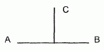
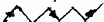
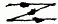
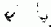

Беседа 3641 от 3877 · Беинса Дуно
Едно, две, три
Отче наш
Направихме упражнението с ръцете: лявата пред дясната, движи се по дясната, настрани. Дясната пред лявата, движи се по лявата и настрани.
Двете ръце настрани и трептение на китката. Накрая упражнението обливане.
Защо на човек, като се наяде, не му се яде? След като се е наял, коя е причината, че не му се яде? Най-простият отговор как бихте го дали? Една жица може ли да я обтягате два пъти, отколкото издържа? Ще се скъса. Сега някои път вие мислите, че знаете много неща. Колко знае човек? Изучава химията, говорите за кислород и водород, тия елементи виждали ли сте ги? Не сте ги виждали. Съединенията, които стават, не сте ги виждали, предполагате. Говорите за слънцето, че имало висока температура, но тази температура не сте опитвали, вярвате че е осем милиона. Кое знаеш повече: когато се разсърдиш ли знаеш повече или когато мислиш за слънцето знаеш повече? Кое е наука? Какво има на слънцето е теория. Като се разсърдите, чувствувате, че сте се разсърдили. Или пък, че си гневен или радостен, кое е реално? Гневът е тъй реален, както и радостта. Вие за гнева имате изопачено понятие. Какво нещо е гневът? Той е 21-годишен момък. Като го видиш – смел, решителен. Като се разгневиш, станеш смел, решителен. Щом изгубиш гнева, пак се свиеш. Какво има туй, което ни прави смели? Казва: Не се гневи, да не изгубиш гнева си. Какво разбирате вие, като се разгневите, или като изгубите гнева си? Ако спечелиш пари и после ги изгубиш, каква полза има? Причинява скръб. Какво разбирате под думите: Не се гневи! Не се гневи, да не изгубиш гнева си.
Друг с въпросът защо човек остарява. Губи нещо. Една струна, след като свирите с нея, изгубва. Като вървите, отделя малки частици, погледнеш, скъса се. Ако цигуларят може да предава нещо на струните, хич няма да се късат. Той все взема от нея – и нагоре като движи лъка, и надолу – все взема. Тази струна може ли да устои, като взема, най-после се скъса. Сега каква сила е гневът, дава ли, или взема, как мислите? Дава. Като се гневи човек, дава. Знае, че се е разгневил. Казва: Разгневих се. Какво значи? Раздал всичко. Аз съм за реалното в света. Реалният гняв е на място, но има един гняв, който е като сянка. Той няма реалност, гневът е реален. Има и гняв на сенки. За пример, някой казва: Не ме бутай, че като взема този камък! – Я да се опита, стотина кила камък. – Ако хвана този камък, знаеш, ще го хвърля. – Той да не казва, но да вземе камъка, да го хвърли, да покаже. Какво лошо има, че той хвърлил камъка? Когато казвате нещо, направете го, нищо повече. Не казвайте нещо, което не можете да направите. Туй, за което ви говоря, знаете в какво положение се намирате. Един човек, като го хване краста, да му казваш да се не чеше. Един човек, като го хване краста, той може да изпъди крастата, като не се чеше. Понеже я чеше, й дава сила. Туй, което чешеш, буташ, даваш живот.

Има един стих в последната песен. Стихът казва: "От мене излиза живата водица. Всеки, който ме пие, живот добие, в дома си се връща и за работа се хваща". "От мене излиза живата водица. Всеки, що ме пие, живот добие, в дома се връща и за работа се хваща". Сега е по-сложна, докато най-после дойде донякъде, римата е непонятна. "... В дома си се връща и за работа се хваща. Една мисъл, която не може да ти даде живот, енергия, ти не можеш да се върнеш в дома и да започнеш работа. Ти не си придобил нищо. Имате 1, 2, 3. Как бихте ги примирили? Представете си, че са живи същества. Или това са семена, как бихте направили тия семена да са доволни в дадения случай? 1, 2, 3 – как ще ги задоволите? Едното ще го турите за господар, двете ще ги впрегнете като кон в каруцата, трите ще бъде самата каруца. Всички те ще тръгнат наедно. Конят, каруцата и онзи, който ги кара, само че каруцата ще се върти така , конят ще се движи така -  
От българския език коя буква ви е най-обична? Всички букви обичате, но имате една буква, която обичате най-много. Не знаете ли коя? Първата буква, с която се пише вашето име. Постоянно тя изпъква. Някой път не обичате буквата, понеже не обичате името си. На хляба коя е любимата буква? В аритметиката имате три процеса. Събиране, какво разбирате под събиране? Какъв процес е събирането? С ръцете си човек ги движи към тялото. Какъв е процесът на изваждането? Ръцете движим навън, като че отстраняваме нещо. 
В природата Бог дал всичко на наше разположение. В даден момент колко въздух може да вземеш? Вие мислите да се осигурите. Бог дал всичко, каквото искате. Дал ви въздух. Колко въздух ще вземете? И повече да вземете, ще го върнете. Ще вземете малко, ще го върнете, после пак ще вземете малко и пак ще го върнете назад. Казвам: В процеса на човешкото развитие онова, което Бог дава и онова, което ние искаме, то е постоянно. Аз съм превеждал това: В турско време турците носеха часовници с по 7-8 капака. Като извади часовника голям, извади единия капак, тури го на земята, извади втория, тури го на земята, така извади седем капака и вътре има малко часовниче. Ще го погледне и после пак започне да туря капаците; най-после ще тури часовника в пояса. Сега хората в своите желания носят турските часовници – едно желание, един капак; второ желание, втори капак, нареди ги. В процеса на мислите у нас, в процеса на чувствата и в процеса на волята милиони души вземат участие. Ние не сме запознати с процесите. Ти мислиш, но в дадения случай милиони души вземат участие. Благодарение на тях, че те приготвят всичките условия за мисълта, тя се проявява. Ако един ден ние имаме една ясна представа, ние ще бъдем благодарни за това, което става. Пък процесите са толкова далечни. Казваш: Аз мисля, аз чувствам. Този процес на мислене, на чувстване, на воля трябва да съгласуваш милиони души, всички да бъдат едногласни, да имат едно решение, тогава мисълта е права. Когато те се раздвоят, и ти се раздвояваш. Когато те се раздвоят в чувствата, чувствата ти са раздвоени. Когато те се разделят във волята, волята ти е разделена. Ако двама души, които са жадни, се срещнат, че единият казва на другия: Аз съм жаден. И другият казва: Аз съм жаден. Какво трябва да правят двамата? Седят в болницата двама души, единият с ампутирай крак, другият – куц, не може да стават. Онзи с ампутирания крак казва: Стани да донесеш, поне ти си с два крака. Ти можеш да направиш тази работа.
Не осакатявайте себе си. Често вие се осакатявате. Като се осакатите, напъвате вашата воля. Под думата "воля" винаги трябва да разбирате вашия ум, той трябва да бъде в съгласие със сърцето и вие да нямате борба. Дефектът е там, че когато умът не е подготвен и сърцето също, напъваш волята. То е безпредметно. За пример, ако аз искам да развивам пестеливост, пиша много ситно. Когато искам да стана много щедър, пиша по-едро. Щом съм щедър, още по едро пиша. Щедростта може да започне по този закон. Вие искате да научите някое дете на пестеливост. Научете го да пише ситно. Имате два процеса: от пестеливост към щедрост и от щедрост към пестеливост. Някой пише големи букви. И пестеливостта е на място, и щедростта е на място. Бъдете щедри, но никога разточителни. Природата обича щедростта, но никога не обича разточителността. Във всички прояви на живота бъди щедър, но никога разточителен. Прахосване да няма.
Да видим ще може ли да пее цигулката. (Учителят я нагласява.) То е щедрост от високите към ниските тонове. Започва от ниските тонове към високите. Това е щестлавие. То е още невъзпитано щестлавие. (Свири тихо.) На какво ви наподобява туй? Пее: "Там високо горе в планината..." ( Пее го в разни мелодии.) Всички пеем: "Там високо горе в планината..." (Учителят пее.) "Аз зная малко чисто изворче. От години то иска голямо да стане. Кой как мине, то си пее, кой как мине, то си пее." (Пее на друга мелодия.) "Там високо горе в планината, аз зная малко чисто изворче. От години то иска голямо да стане. Кой как мине, то си пее, кой как мине, то си пее: като мене друго изворче чисто няма, от мене изтича живата водица. Всеки, що пие, живот добие. В дома ще се върне и на работа ще се хване." (Всички пеем.) "Там високо горе в планината...".
Само започнахме предприятието. Когато душите композират, всички вземат участие. Хармонията се дължи, когато всичките души вземат своята идея.
Това е живот вечен – да позная Тебе, Единаго, Истинаго Бога и Христа, Когото Ти Си пратил.
5. Лекция на Младежкия окултен клас, държана от Учителя на 23.X. 1942 г. Петък – 5 ч. с. София – Изгрев